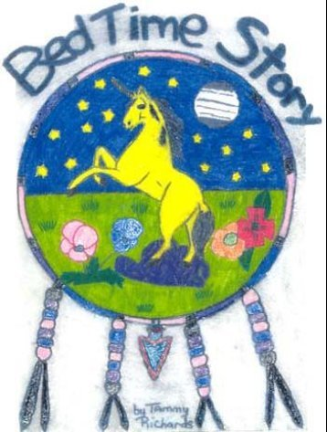

| Bedtime Stories (Japanese) | |
| Joy, Elizabeth | |
| UNKNOWN (2016) | |
家族の単位はあらゆる家族識字プログラムの成功の鍵となります。 それは、を経由して
のリテラシーの種の成長を家族しています。 は、親と子の相互作用の影響を
を確立し、リテラシーの重要性が育まれています。
モデルをすることはできません下の推定によると、親の役割をしています。 それはモデリングであることを
子のライフタイムのパターンを確立します。 最初の子は ' モデル化されたビヘイビアーを模倣し、
これらのビヘイビアーを最終的に採用しています。
親は彼らの子供の IT リテラシーを正の値が割り当てられます。 はだけではない
読書はいいことだ、子を表示親ですが、親も体験した
自分のスキルを高めるための肯定的な補強しています。
プロモーションと家族識字の奨励は、 SIAST の任務の 1 つ
Kelsey キャンパス識字プログラムします。 私達の努力でこののの受講生が達成する
2001/2002 識字クラスにこの子供の絵本を作成しました。 この本は次のように使用される
彼らの自身の家の環境の範囲内にいる生徒を、自分の家族と拡張
ファミリー・リテラシーの精神でご家族単位。
子供の絵本に 就寝時間の物語が 完了しました私達のクラスの一部として開始され、
の家族識字の日 2002 年の祭典である。 この本では、成功を収めました。 私達の評論家は、お子様連れ、
孫、学生の、姪や甥は非常に肯定的なレビューを行いました。
これまでの識字の学生、子供たちが楽しんでいたことと継続には誇りを持って、報告された
学生の私達の識字率で構成された過去の本の話とグラフィックス生成されたをお楽しみください
クラスをしています。 受講生の一部では、各項目の選択を聞いて彼らの子供たかったことを報告しました
一本。
子供の前の本への反応の大きな動機になった
就寝時間の物語を開発 しています。
複数の知能的アプローチの両方の作成と開発に使用されていました
子供の本を持っています。 複数のインテリジェンスモデルが再度自体では、このタスクをよく貸してくれた。
複数のインテリジェンスは、学生へのアプローチは、特定できるようにするための教育モデル
異なる 8 つのインテリジェンスのアプローチを使用してタスクを実行します。 では、関連するタスク
論文の本の作成各学生が彼 / 彼女のを使用してチャレンジへのアプローチを許可
優先するインテリジェンス（ s ）と同時に、これらの知性を開発し、強化して
以下を開発しました。
学生の作成プロセスを生成された子供の本には非常にポジティブだった。
経験しています。 それ は、受講者は、所有権の意味だけでなく、成長をすることができ
その所有権に誇りを持っています。 それは、受講者は、リスクを安全と正常に許可されています。
学生のほとんどは、この課題は、ドアの読み取り領域を開いたと
彼らは以前に経験したことがないリテラシー : 創造性、想像力と成功を収めています。 には、
受講者に、読み取りおよび書き込みのリスクを取る勇気をされました。
就寝時間の物語
就寝時間の物語 は私達の子供、孫、姪、甥のために、予定されている家族。
この特殊な本は家族識字奨励を促進し、支援することが私たちの希望
と、将来的にしています。
昔、大きな美しい森のそこに多くの動物が住んでいました。 森の動物たち
満足しましたし、それらはすばらしい人生を生きてきた。 動物には満足していない理由の一つだった
フォレスト内のためもあり、小さなお姫様が住んでいました。 の小さい王女の長い巻き毛があった
ブロンドの髪をしています。 どのような彼女の名前は知っていますか？ が、彼女の名前は驚きだったかもしれない
マリーナ！ はい、マリーナ、美しいリトルプリンセスのための美しい名前を指定します。
彼女は川の近くの公園に移動して彼女の友人と一緒にプレイし、毎朝しています。 夫人は、ウサギ
Mr. スカンクの非常に若い鹿は彼女の友達だった。
ある日、一緒に遊んでいた。 彼らの失われたトラックのように多くの楽しい時を持っていました
の時間です。 Sun ダウンしてましたが暗くなった。 小さな動物たちの家に帰るのに恐れていた
単独で。
王女のマリーナには考えがありました。 彼女は、「すべての私の祖父の家には付いていないのはなぜ
私にしています。 私の友人は私が彼の場所を移動したときに祖父の気がしません。」
彼女の祖父の家でマリーナと彼女の友人が到着したとき、彼女はそれらに招待されました。 彼がした
それらをすべてを食べられることを扱います。 後に彼らはすべてのプレイしたゲームを食べました。
深い声の時間後に私の祖父は、「時間のためのベッドが今しています。「おじいちゃん収集した
すべての友人や周囲に伝えた就寝時間の物語。 長い皆ぐっすり寝ていた。
午前中は動物の家に行くためにそれを安全にしました。
日常のマリーナと彼女の友人はまだ再生していますが、今は、家の前にされていることを確認し
それが暗闇を取得します。
多くの満月の前の民俗物語は世代から世代へと渡されたがありました。 には、
物語は、男 Cho-Cho または、ブギーマンについて すべては少年の名前を開始しました
ノースダコタ州。
ノースダコタ州のお母さんの夜の火のために一部の薪を収集するよう依頼していた。 夜
クーラーがありました。 すぐに雑用をすることの代わりに、ノースダコタ州の彼は十分にして計算した
日光の 2 つの事をした。 彼は彼の友人にプレイをしていた後、彼は薪を集めて
モーガンは、 Joey 、 Bo しています。
は、彼の母は、サウスダコタ州のまきとしないのはなぜだったのだろうかと始めた後長くない。
夜の高速は下落していた薪を見ていました余りにもハード。
ノースダコタ州の何が起こったか悟った。 彼は彼の苦境についての彼の友人と語ったという
彼らは彼らの友人を助けると思います。 すぐにの後で、若い男の子に収集をすれいました
暗い。
ノースダコタ州の母は何かが起きていましたが気にしていました。 彼女のためのノースダコタ州の模索していました。
、彼女は少年たちを聞いた後に長いではありません。 彼女は複雑な気持ちになりました。 彼女はノースダコタ州を見て幸せだった
しかし、彼女はまた彼が持っていない彼の母に聞いた気が狂っていました。
彼女はノースダコタ州と彼の友達に教えることは、レッスンには彼女はブッシュ大統領に非常に忍びたいと思いました
静かにしています。 それから彼女は枝を取り、投げた。 小枝は地面をノイズに当った。 It
少年の目にとまりました。 彼女は反対方向に別の壊れた小枝を投げた。 には、
男の子の跳ね上がった。 母はハード彼女の笑い声と、こもった感じの呻きを抑えていました
彼女の指を音をたてています。
男の子は完全におびえていました。 しかし、サウスダコタ州は 1 つのゆうきをだしました。 彼が先に賭けた。 には、
再び母呻きました。彼女は別の小枝を投げた。 少年たちはくぎ付けになっていました。 複数回の
母親は、低と深い声で呻きました」、「母親に耳を傾けます。」
すべての少年たちにドロップされた、実行しました。 母親は彼女の笑い声とバックを保留できませんでした。
男の子は、この公聴会では、さらに速く逃げ帰りました。
母親の一部まきつけた後、彼女は家で、彼女が見つけたました
目に涙を浮かべていたノースダコタ州の。
ノースダコタ州は叫んだ、「母、母、申し訳ありませんでした。私は、耳を傾けませんでした。」
彼の母親は彼を愛して開催していたので、彼女は本当に申し訳ありませんが知っていた。 ときにしてから
ノースダコタ州のリッスンしていないように感じましたが、母は言及し、「ブギウギ男は恐怖をますれば
する誤動作します。」
前の恐竜は何年も地球上で最大の生き物いました。 一部の非常に大規模なていましたと
他は小。 また、多くの異なった色入って来た。 の燃えるような山々の後ろにいました
の恐竜の日を過ごしたバレー。
1 つの晴れた日には、恐竜のサッカーのゲームをしていた。 他の新しい恐竜
恐竜の前に会っていませんでした歩いて来た。 彼は停止したとして、彼は見た
の質問に、「私も再生できますか ? 」
すべての彼を見た他の恐竜のしています。 1 つの巨大な声で、「ありません」と述べた
理由は、と語っていた彼にはありません彼は他の人よりも別のを見ていたためです。 彼は
長い首をしていたが、緑だった。 それらのどれも今までの、または長いネックを見、聞いていた
緑の恐竜。
新しい恐竜の皆は彼に、彼はありません彼らはと呼ばれるとのことだったので非常に悲しかった。
「緑がかったの。 彼の機嫌を損ねていました。 ゆっくりと彼はダウンして、悲しいことに座って他の人のを見ています。
時間によって、いきなり行ってきましたが、すべてのサッカーの再生が停止しているが、すべて調べてみました。 1 つの
もし、恐竜のツリーにのみボールを蹴りました。 ボールがそれらのために余りに高いをていました
に到達します。
しかしそれは長い襟、緑の恐竜の高すぎるではありませんでした。 彼の上を歩いたとすると述べた
他の恐竜は、私はあなたの球を得ることができた場合は、私と一緒にプレイすることができますか」「他の
恐竜には良い考えだったことを決定した。 長い猪首、緑の恐竜に達していたと
彼の長い首と彼は簡単にはボールを取ったダウンしています。
では、再び彼らの再生を再び開始しました。 彼らはサッカーをするのは素晴らしい時間を過ごしました。 その他の
恐竜彼らは彼がそれらと遊ぶことを、呼び出し元の彼の名前がなかったのが残念だった。
にあったのはその日のレッスンを学んだ。 他にも外観が異なる場合がありますが私達がべきである
それらを受け入れています。 私達はすべて私達の特別な何かである。
孤独の恐竜は今では多くの友人を持ってきて、多くののバレーでプレーした
年になります。
彼女は目を閉じて、願いをした。 彼女欲しい彼女は 5 つの小さい星の可能性があります。 彼女は
望まれて、彼女の心をケアを閉じておくために彼女の手に持ち、彼女いましたと
永遠の愛。
彼女は目を開いたとき、彼女の眼の何かをつかまえた。 5 つのきらめく星が全部でていました
行があります。 彼女はこれらの時間だったときに右の彼女は知っていた。 彼らはそこには
お待ちしています。
渡された時刻と、右だった彼女の最初の小さな星は彼女に来たときにしています。 彼女は、この星を知っていた
男の子のように彼女は彼のことをガブリエルという名前だった。 彼はとてもきれいだった。 彼女はとても満足していました。 このた
彼女は今まで知らなかったことを最高の気分になれます。 この小さな星を維持しました彼女の物です。 彼女を取った
彼女の手には、彼の彼の世話をしました。 彼女はすべての彼女の胸は、彼を愛していた。 ガブリエルは彼女に
そう彼女の生活の中で多くの喜び、彼女はそれの毎分を愛した。
一部に渡されて、 2 番目の小さな星を彼女の来た時間。 彼女はまた、この星は知っていました
男の子が、彼女は彼の名前をしています。 Javier と最初の星と同じように、彼女は両手で彼と彼女はしました
彼は彼女の心を閉じた。 彼女は彼の世話をしましたと、彼女の初めてのようには、彼を愛していた
星が表示されます。 ハビエルのような、美しい星だった。 彼女は自分の目を信じることができませんでした。
若い女性のように、すべての彼女の中心に愛と 2 つの星をたことに興奮していた。 たびに
彼女はそれらの喜びの涙で満ちている彼女の目と考えられています。
一部の間に、別の小さな星を彼女の後に出て来た。 この 1 つのもが男の子だったので、彼女は彼の名前
ジェームズ。 彼女は両手で彼女の新しいリトルスターを取ったと彼女は彼に心を閉じた。 彼女は
彼のためにされてきた、彼女の最初の 2 つの小さな星と同じくらい彼を愛していた。 彼はとても豪華で、彼女はいました
この小さな星にもいました彼女が信じられませんでした。
今彼女はケアするには、 3 つの小さな星があった。 彼女はそれらのすべてのように非常に愛されています。 彼女を見た
それらの成長と彼女は毎日それらを賞賛しています。 彼女はそれらを取り、それらを表示する
の世界である。 彼女は楽しかったし、それらの世話をしたのは、数年で行った。
彼女は彼女のことを彼女に来たを望んでいましたが、最後の 2 つの小さな星にショックを受けた
同じ時間。 彼女はほとんど彼女の幸運を信じることができます。 彼女はすべての男の子は思っていましたが、
彼女は自分の希望していたときに昔にこれを尋ねていましたが多すぎて彼女と思っていました。
すると、新しい 2 つの小さな星は彼女のアンドリューとアダムの他のほとんどの星：ガブリエル、ハビエルという名前れいました
とジェームズには、すべての時間を助けたかったその喜びに圧倒されました。
その婦人の心は喜びに満ちていました。 彼女は両手で彼女の新しい小さな星を取った。 彼女は開催され
彼女の心を閉じて、彼女はそれらを気にしています。 これらの 2 つの新しい星のように小さくて、
美しい。
彼女はあまりにも多くの愛がありました。 彼女は十分にすべてのそれらにそれらが必要に応じて、愛を与える必要があった。
彼らは彼女の人生の一部でした。 彼らは彼女を永遠に愛していました。
彼女の 5 つの小さい星が育ったと同時に、彼女は彼女を愛したことは、すべて同じには必ず教えて下さい。
と彼女は常にします。 彼女のために彼女は、ときにあることを約束した
、ということは、彼女はそれらを必要としたときに彼女のために存在していました彼女の必要があります。 彼女の願いは来ていた。
5 つの小さい星を持っていることを喜びました。
今、彼女の時間は右のとき彼女を放そうとした深い内部のことを知っている。 しかし、
その時彼女は、彼女の心は常に閉じたままにしておき、必要なときに、彼女はそこにある
を抱擁します。
空から降ってくる 5 つの小さな星、
すべてのあなたの成長可能性があり
あなたの明るいライト磨きましょう
お母さんのことをすべてを愛し
非常に、非常によく似ています。
起動したら上の時間があり、 John という名前のいたずら狸だった。 彼は人の名前で住んでいました
ジムです。 ジョンは国の大きな家にはジムが住んでいました。
1 日のジム・一部のビジネスのための都市に行かなければならなかった。 彼は背が高く、背の高い帽子をかぶった。 ジムは常に
背が高く、背の高い帽子を彼はどこへ行っても身に着けていた。
ジムは左ジョンだけなら彼は最も可能性の高いことを彼はすべきではない事になるだろうことを知っていた。
ジム・ジョンを放っておくと好きなジム・彼は都市にジョンになっていたのは知っていました。
ジムとジム・ジョンの車に乗って市内を運転した。 ジョンはしていなかったので、非常に興奮していました
前に大きな都市になっていました。 その車は町に着いたが近づくほど、終了しましたジョンしました。
最後にはホテルに来ています。 ジムジョンは車のように言いました。 ジムの人に話をし
フロントデスクの対応と、彼は 2 つの部屋を予約しました。
ジム・ジョンをどのように見に行きました。 ジムは車に行ったときに、車がなくなっていた。 ジムれいました
怖じけています。 彼はなにをするのかわからなかった。
警官はその時間だけで歩いて来た。 ジムにを参照してください彼を幸せにしていました。 彼は、実行しました
警官としたと述べている。「私の車が不足しているとジョンはしています。」
その警官は、「私はただの黄色の車が坂道を見ていました。
ドライバ ! 」
ジムジョンと車を何が起こったのか心配していました。 その警官のジム・求められ
何が起こったのか。
ジムに自分自身のためにと考えられています。 その後、彼が覚えていた彼はチェック彼のブレーキだけであったと
男の人は、一部のブレーキ作業必要に応じてすぐに行われた」と述べた。
ちょうど、別の警察官が走ってきました。 " 私は、黄色の車は丘を行くのを見ました。」の両方
警官とジムは丘を駆け下りました。 一番下に車を置いた。
これを抑制するにはしています。
「一応！ ははラッキージム」と述べた。 ジムは最初は非常に満足していたが、彼は非常に長く満足していなかった。
彼はどこのジョンを参照してください。なかった。 彼を見てましたが、どこには見つかりませんでしたジョンを見た。
その後ジムが彼はツリーでジョン・座っていた目のコーナーからに入って、しています。 ジョン
見た非常におびえています。
ジムはツリーにジョンを助けることを行った。 別の警察官が彼はジョンを見ていたと述べた
クルマからの縁石に衝突した後にします。
ジム・ジョンを傷つけていない満足していました。 一緒に車のすべての右だったかどうかを見に行きました。
ジョンとジムは車をガレージにしたし、車の修正されました。 これらの両方のホテルに行きました
彼らの事をピックアップしています。
ジムとジョンは国に帰っていった。 そのジョンが最も幸せだった。
ある時トロイという名前のヨットがありました。 彼はいつも仕事をするようにしようとしたハード
右します。 1 日のトロイの父は彼に、トロイと言った彼は長いだろうとなったの
旅は明日します。
トロイは彼と一緒に来て別のヨットが必要になります。 彼が彼が望んでいたのを迷っていました
をしています。 トロイをヨットが Sabin Sabin IPV について考えていました余りにも小さい、弱い。 [
トロイヨット Trinelle について考えました。 」はありません！ 彼自身には、「彼女は女の子だった。」と述べた。
「ちょっと ! 私はすることができますを知っている「 Shaleisha 。 再び彼は彼の選択と思ったのですが再び
彼は言った、「いいえ、私は彼女を取ることはできません。 彼女は重いものを運ぶことはできません。彼女はおそらくヒートシンク
私は実際に私が取ることができるのかわからない。 少年は、オハイオ州の男の子 ! 」彼自身には、と思う」と述べた考えなさい、考えなさい !
私はいつも何をしているのです！ 私自身は頭痛」を与えることを行っています。
突然、彼の目は明るい成長しました。 彼には考えがありました！ " ジェシカ・ヨット！ 私は彼女がしている女の子を知っているが、
彼女は大きく、私よりは少し賢い。 すごい！ 私は彼女と一緒に素敵な時間をいた
明日にします。 さて、現在私が私が取っている、私のベッドをようと思っていることを知っている。 私には長い
旅をしています。」
トロイは朝早く目が覚めた。 彼の母親が彼の朝食を作った。 「これは
すばらしいあなたのいとこに持っていくことにしていることを行っている。 しかし覚えなさい、貴方達をた
8 時きっかり ! 」に戻る
トロイは頷きながら「はい母。
トロイの父の前には、方向を彼に与えた。
「なにをしている私達はお父さんでしょうか。」と述べたトロイをピックアップしてます。
トロイのお父さんは、「 2 つの湖での姉妹の dol l 衣服の一部をピックアップしています
月の光、南の草原地公園。
そのため、 2 つの帆船が開始されています。 、手を振って、「君達はこの夜」を参照してください。
父に、「 2 つのことがあります。セーリングしました手を振っています。」
は、南が航海をしていた、大きな山と鳥のそれらの上に飛んでいるのを見た。 ジェシカ
ヨットの考えは、私たちの短いカットを通過していない場合の方法もっと早く戻すことが「何があった
と私達は家に帰ったときにフリータイムがあります。 トロイ麺とは何か」と考えたりし
Troy によると、よい音」を「私に」。
そのように疲れていたのはおじさんの場所を得た時間では、一部の残りのために必要です。 そう
しばらくの間、彼らはいとこを訪問することを決定しました。
その後、トロイアのに気づいた、ジェシカ・ヨットに言った、「それは今に行く時間にしています。 私達はた
８時に戻り、覚えてますか ? 」
彼らは時間を無駄にしませんでした。 このようにしていましたにしても、帆を使用することができません。
ホームの時間。 彼らは彼らのモーターを起動していて、いとこに手を振り、「私たちがを参照してください
2 つはすぐにしています。」
一緒にに沿って飲み干したし、帰宅の時間に到着しています。 トロイの父を与えた
衣服と彼の父は、「良い仕事をしています。 あなたの母と私は誇りに思っ
することができます。 ありがとうございました」。
ある時は天使の名前サマンサがありました。 彼女はトラブルに常にいました。
サマンサは物語を作る彼女はホットウォーターの多くに常にいました。 一部の
他の天使は、このことに気づきました。 彼らはこの案件がどのようであるべきかについて話しました。
1 つの天使は、「私たちは彼女にレッスンを教えることができるのかもしれない。「彼らはすべてのことに合意した。 次の日は
クラウドの部屋にサムと呼ばれています。 すべての天使の上司サム地球を移動するように求め
必要とする誰かを助ける。
Sam は、 [OK] をクリックします。
」がありますが、 1 つの事を覚えてはならない」とし、上司の天使」とするのはすべてではありません
" サムはこの公正だったと思いませんでした電源をオンにします。。 大ボスのサム彼は非常に嫌な顔をしました
彼女の「行きなさい ! 」を注文
彼女は地球にダウンしています。 彼女は助けを必要とする誰かを探していました。 サマンサを見て
を置き、すべてのを見た。
1 つの通りの角に彼女は 2 人の子供と、小さな犬を発見した。 サムに来て
どのようにしていました求められます。彼らには問題はなかったと述べた 彼らの助けが必要に応じてサムに頼んだ。
1 つの子供は彼女の非常に奇妙なことを見た。 彼女は移動しました。
次の彼女は 2 匹の動物を疑問に思っていました。 「彼らは見てしまった。」と彼女は独り言を言った。 彼女は行きました
をして、彼女は彼女で吠え始めました。 Sam は非常におびえて動揺しました。 彼女はいませんでした
何をするか知っています。 彼女は彼女自身を落ち着かせて、話をし始めました。 彼らを聞いたとき
彼女の声は、彼女のに吠えるのをやめた。 天使は、非常に幸せを感じたので、彼女は少しを助けた
犬は彼らの家に帰る道を見つける。
サマンサを自分で考えて、「悪中のすべての時間を私の代わりに私がお手伝いできればれいました
私がしたことについて気分が良いと思います。」
小さな天使の家に着いたとき、彼女は学んだレッスンをしていた場合には、ボスの彼女に尋ねた。 Sam が彼に言った
は彼女が持ってます。 大ボスは非常に満足しました。
Sam は、宿泊した部屋は、小さい天使は彼女のすべてが右だったか左になります。 Sam はいと述べた。
誰もが満足しています。 その後、 Sam とは、他の天使が祈りと寝たのだ。
ある日、森のパス上のエルフのウォーキングがありました。 、彼は歩いていたの時に来た
名前のマットな人ではない。 マットは、 ELF は、との質問に対し、「どこへ行きますか」
Elf は、「私は、パスがダウンしています。」
" 私は一緒に来ることができるか」。
」、「確認して、 ELF は、「しかし、注意してください。ブッシュ大統領は、本当に野生の、草はかなり高いと述べた
水は非常に深い！ に移動してもよろしいですか？
マットは、そのようにされている場合は「まあ、私は私が私の心を変えて、推測しています。 Elf が左右しています。 マットは本当に
Elf のように彼に彼に従うことを決定しました信頼していなかった。 には、非常に短い時間のマットは、 ELF があったのを見た
鎌を彼にしようとしました。 草高はありませんでしたし、野生のブッシュと水はありませんでした
すべてに深いではありませんでした。 Elf だけで、すべての周りのマットがほしいと思ったでした。
マットは、ブッシュの背後から跳び出して、 ELF に述べたように、「鎌を私しようとしました。 なぜ
私の許可していないと来ることができませんでしたか」
Elf の湯水のを感じ、彼が彼のマット申し訳ございませんがしている、と述べた。 彼のマットと彼と来てくれるように頼んだ
上の 2 つのウォーキングされている。 彼らはブライアンという名前の別の人に来てまで歩いた。 Brian 求められ
行っていました。
Elf は、「私たちは森の中に散歩に出かけています。 来になりますか ? 」
Brian 氏は、「ありません、ありがとうございます。 私は、ブッシュの野生のていましたし、そのマットの友人から聞こえて
草はかなり高いし、水はかなり深い。
Elf の答えた、「私はそれらの事を彼に言った。 しかし、実際のところ、私が述べたように、不良ではありません
しています。 マットあなた自身に尋ねることができます。 これはマットが付いています。」
しかし、「私は、を通過する Brian 」と語った。
Elf は、 OK をクリックして私に言った。 私達は私達自身に移動します。 一緒に来てはお願いしませんでしたとは言わないでください。
歩いています。」
マットとは、 ELF の森に行きました。 お腹を空かせているところもあるようでを検索し始めたれいました
を食しています。 探していたのに、ラリーに走った。 彼にお願いし、「どこに
していませんか ? 」「私たちは散歩用のフォレストに行く。 一緒に来たいとお考えですか」と尋ねる
Elf 。
Larry さんは、「はい、私はあなたと一緒に来たいと思います。 どこまで行くのですか。」
「ああ、私たちは行くことができまでしています。」
「私はあなたと一緒に来たいと思います。 私は自分で行くとすぐに人が行っていません。
周りに話をしています。」
Elf は、「多くのすばらしい事を一緒に探検することができます。 私たちは 3 つの、楽しむことができる。
一緒に散歩しています。 事だけをすることは、友達の事をすることは大いによりよくである。」
そのためには、すべてのことで合意したとオフにされるので、一緒に行きました。
1 つの暗い、暗い森林の奇妙な何かが起こったの霧の日。 フォレスト内にありません
パープルの 3 本足をカエルが住んでいました。 彼はで囲まれた池で見つかりませんでした。
木々や茂み。 カエルの非常に孤独だった。 夜、彼は非常におびえていました。 を彼が持っていたの 1 つがありません
再生をしています。
この 1 日赤のグラスホッパーに沿ってホッピングしました。 それは、カエルを見てましたが、「なぜ
そう悲しそうな顔をしてますか。」
「私と一緒に遊ぶために誰もがしています。」
「私の名前はジャックと私と一緒にプレイしています。「グラスホッパー」と述べた。
「ああいい子ぶり！ 私の名前はエリックと私はこの野生の池に住んでいます。 私は一日中と夜の場合私は泳ぐことができ
たいをしています。 私は、私たちを再生できますが、一部のゲームをしているために、ここで私は嬉しく思っています。 これらのゲームを
2 つのを再生します。 私は自分で再生することはできません。 我々は馬跳びなどのゲームをプレイして、することができ
リードしています。 ライブをする場所は、ジャックありますか ? 」
」と、とてもではありませんが、私はあなたとエリック」。を私はここに泊まりましょうすると期待していました
「もちろん、私の滞在することができ、 Eric 」と述べた。 「それはねえ。 来て、を表示することができます。
ここに座ってすることができます。 後は、百合のパッドからリリーパッドへのジャンプをして、リーダーに従って再生されます。
ジャックに興味がありました。 彼はあなたの他の足に何が起こったのは Eric 」、「 ? 」
エリック氏は、「何もしないのは、私の足に起こった。 この方法は私が生まれていました。「では、 leg 育ちませんでした
もう一度実行してください。
夕食 Eric とジャックの後のすべての夜夜明けまで再生されます。
太陽が出てきたとき、エリックとジャックは、池の横には何なのかに座った。 Eric
提案された、「ホッピングのまわりで行きましょう。 私達はリーダーに従って次を再生されます。」
次の日別のカエルを連れてやってきた。
新しいフロッグ氏は、「こんにちは、私の名前はサブリナ。
紫色のカエルは、「私の名前はエリックとこれは私の友人のジャックは、グラスホッパー。 [
彼らはすべての茂みの中に遊びに行きました。
暗くなった前に、彼らはすべての池に戻った。 エリック・ジャックとサブリナをリッスンするように求められ
彼に伝えて何が起きていました。 Eric と彼の友人で、ジャックは、彼女が滞在したかったか
それらを !
もちろん、「 ! 」と彼女は言った。
次の朝のそれらの 3 つのリザードに這い上を見た。 それらはすべて、「 Hello ! 」
トカゲの氏は、「私の名前は Tiffany です。「すべての 3 つのティファニーは、トカゲを自分自身を導入しました。
エリックとサブリナの家族を育て始めました。 エリックとサブリナの行った日ごとにと泳いで
この若者たちはしています。 すべてのそれらの池で良い時間を一緒に過ごした。
サブリナ、ティファニー、池とエリック・ジャックに行ったときに、子供たちを見て、閉じました
ブッシュにしているのは誰のために夕食を得ることができる虫が発生した場合にを参照してください。
彼らは彼らの食事を楽しんだ後、再生されます。
1 日ジャックとティファニーのどこかに住むことになった。 これらはすべて、別れを告げた
友人と、再びすぐに満たしてしまうことを約束した。
エリック、 Sabrina は若者を彼らの通常の日常でした。 家族の再生
馬跳び、夕食、泳いだすべての日を一緒に過ごした。 これは、夕方の時は、教えて下さい。
この若者たちの物語。 エリック、 Sabrina 、彼らの若者の後ずっと幸せに暮らしました。
昔のピーターという名前の小さい男の子がいました。 彼は彼の祖母が住んでいました。 彼の
祖母のブラインドを得た彼女はより古いときに行きました。 若い年齢から、ピーターは彼の後を見ていた
祖母がしています。 彼は親切な、穏やかで、患者の人間になった。 彼は非常にハードに仕事しています。
Peter の国で強力な人だったといって、王様が住んでいました。 は、王の娘がいた。 彼の
娘はとてもかわいらしくて。 王は自分の娘を心配しています。 彼は自分のことについて考えた
毎日の娘の分。 王は自分の娘に満足して彼が望んでいた
彼女にとってよい夫と結婚したいと思っていました。
は、時間が経つにつれて、王女と育ちました。 彼女は、日を追うごとにますます美しくなった。
彼女の父、王は、彼の娘の将来を真剣に考えています。 キングは、彼が何か疑問に思いました
になります。
ある日、彼には考えがありました。 彼はそのニュースは彼の王国のすべての送信されたと彼は送信された
その他の国を発表します。 この発表を読んでは特別な存在
アーチェリーの大会があります。 勝は、この特別なアーチェリー大会、賞金を主張する人です。
この賞は、王の娘と結婚した。」
すべての人々が楽しみにしていました。 ピーターはニュースを聞いたとき、彼はアーチェリーに行きたいとします。
大会は非常に多くあります。 彼はアーチェリーでは非常によかった。 彼は非常に興奮していたの
大会を飲むことができず、彼は食べることができませんでした。 彼は眠ってしまったときに、彼は夢を見た
それについて。 彼は目を覚ましたとき、彼はそれについて考えています。 彼は興奮していました。
同じ彼は悲しかった時にも、彼がとても小さくて、醜いのである。 彼の祖母
彼に頼んだ彼がなぜそんなに悲しそうな音をたてています。 彼がしていたのため息をつきましと答え、「私は大丈夫だよ。
祖母がしています。」
彼の祖母は彼が悲しいことを知ってくれていて、彼女は彼をもう一度、もう一度尋ねた。
最終的に彼は、王のについてのニュースを聞いたという彼の祖母を説明した。
の大会があります。 彼は彼女に言った彼がいかに感じたか。 彼の祖母は、「そのゲームでよいことをしています。
理由を試してみてくださいませんか。」
" 私はアーチェリーでよい、知っていますが、私のそのうちのいくつかは多分よりよく」。
「あきらめてはいけない。「彼の祖母は、「それを」することができ
ピーターは彼のおばあちゃんは、「しかし、私は試合に勝つなら、私は王女と結婚しないとは思いません
私を」。
彼のお祖母さんが彼に語った。「それは彼女が結婚するかどうかは関係しません 念のために試してみてください
ゲームにすることができます。」
彼はしばらくの間と考えられています。 突然「右祖母ている Peter 氏。 私は試してみてください。」
ペテロ自身のトレーニングを受けています。 やがて彼はゲームのために準備をしていました。 は、彼がゲームの日に
早朝の城に向けて出発する準備ができました。 彼は残すことについて満足していませんでした
祖母だけ。 彼は彼女のことを心配していた。 しかし、彼の祖母は彼に言った彼は行きました。
彼が去った前に、彼の祖母は彼に与えられたのは赤いバラ。 「優勝した後は、これは、ローズを与え
プリンセスなの。 しかし、この彼女にを与える前に、あなたの目はそれの美しさの臭いを閉じます。 強い
ゲームに勝つと度胸がすわっている」とした。
彼はさよならと彼の祖母左で城に行ったと言いました。
彼は到着したとき、ピーターは大きな城が見えた。 多くの人がいました。 彼は恐れていました
移動になっています。 ピーターと思ったと考えた。 彼はほとんど彼の祖母に戻って、彼は
彼の祖母の言葉を聞いています。 彼はピーターを再びオンにすることができないことはわかっていた。 彼を越えて行った
城の橋、城の大規模なゲートを通っています。
の中で彼は、より多くの人を見た。 兵士、彼の周りに存在していました。 彼は非常に恐れていた。
誰もがこの試合について興奮していました。
ピーター・ラインのゲームを開始するには、立って待っていた。 彼はみんな彼を見ていたと感じました
なので、不思議なことに彼はプリンスだったか、騎士はないまたはだれでも重要です。
お店の店員、商品と人の販売と言っているが勝つを推測するのは話題を
の通り入力されています。 王女と結婚するのはどんな人々なのだろうだったのですか？ それは騎士だろう
または多分王子ですか？
この大会で多くの優れたアーチがありました。 ピーターは彼のターンをどきどきしながら待っていました。
最終的には、裁判官の名前が呼ばれる。 ピーターの前に進み出た。 彼は弓の上に矢印が配置されています。 彼は
目的とした矢印をリリースし、文字列を取得します。 空気を通って、飛んでいって、ターゲットに当たった。
群をはっと息を呑みました。 ピーターを見て彼はそれを信じることができませんでした。 Peter 幸運であった。 彼が持っていた
部門賞を受賞した。 誰もピーターに勝利していたと考えた。
ゆっくりとピーターにフロントを歩いた。 彼は、国王と王女の前に立っていた。 彼の
目を伏せた彼は、ローズは王女を提供されています。 しかし、彼は彼女にする前に、バラ、彼
ちょうど彼の祖母のように、その美しさに彼の匂いと言っていた。
魔法のように、ピーターは強く、背が高くてハンサムな男になっています。 みんなびっくりしていました、
王と彼の娘を含めています。 ピーターとの王女と結婚し、今まで住んでいた幸せな
後にします。
1 日、 JD 、ブレンダと私はテレビを見ていて、私たちはテレビで広告を見た。 はそのカーニバルにいました
８月８日の町。 JD とブレンダは、「今年は、お母さんか」にすることができ
私はそれらを、にっこりと笑って言った、「はい、今年は、に進みます。
は子供および私が私達のお金を保存します。 8 月には、カーニバルには行きました来たとき
展示会場。 私たちは興奮していました。 子供たちには、すべての動物を見たいと思っていた
カーニバル。 彼らは 2 つの、着色されたコートには、象は、タイガースを見たいと思っていた
クマ、オオカミ、社稷（サジク）しています。
私達は歩き始めた。 私たちが最初に見た動物は、オレンジと黒のタイガースとれいました
白と黒のタイガース。 私達のパフォーマンスに大きな猫。
私は子供たちに、「オレンジとブラックタイガー Tigger のように見えます。 彼の歩いた道を参照してください。
で、スタンドに弾いたところダウンしています。 彼は彼のお母さんと話したかったように見えた
他の 2 つのタイガース。 彼らは若いタイガースのようにしています。 白と黒とオレンジ色の外観と
ブラックタイガースに話をしています。「 JD とブレンダは本当に興奮していました。
その後 Tigger に私が話を始めたように見えるトラ、「私はのようにする、という方法が
Tigger ですか。「タイガーお願いしました。
彼は私に話していたのには驚いた。 " 私は - 私のため Tigger のように見えると思う
道を歩いていったのですが、略弾いたところをオフにします。 の Tigger 漫画のことを思い出します。 する
彼が見つかるたび、フォレストのように襲い掛かる。
ちょうどその時、二人の若いタイガースには、白と黒のした物を、 JD に話し始めた。 「それ
自由を素敵な必要があります。 あなたは世界に出ています。 檻にして立ち往生しているではありません
町から都市に移動しました。」
JD のタイガースにしました。氏は、「はい」を自由にしていいます。 しかしまだ旅行をするのが良い必要があります。
私達は異なった都市または町を旅行の周りにはあまりいない。
他のオレンジとブラックタイガー Brenda 、実現に向けて」を言い始めた楽しい思いをしてしていること
・すべての動物と話をしますか ? 」
Brenda と答えたところ、「はい、私達は楽しい時を過しています。 しかし、我々のすべての動物をまだ見ていない。」
私は私の娘の会話を聞いて、「来て見ていきましょう熊を参照してください
象します。」
「はい」です。 ましょうの「ブレンダと JD は述べた。
私たちは、虎に別れを告げた私たちは、ケージの中では、クマのを参照してください。が歩いた。
は、象のケージを後にしました。 我々は停止していて、象の話をした。 私たちは
ゾウが求められどのように好きだったのは、お祭りの中、古い方法をしました。 1 つの
象と述べた彼女がそこにいたのは５０歳と他の 1 つは彼だったのだ」と述べている。について
２５歳です。 彼らはすべての生命のためのカーニバルにされていたことを明らかにした。
私達の次の停止は、狼になっていた。 私たちは、一度のように再度すべてのオオカミは、話を停止し
それらをしています。 オオカミを JD とブレンダの話をしています。 彼らの唯一のされていたと話してくれました
少数の年のためのカーニバル。 彼らには、を参照してください何人の人のようなのを見て驚いていました
別の動物である。 が、話すために立ち止まった多くの人々がいないことを悲しがりました。
「そのためには、私たちのような人でしょうか。」、オオカミに頼んだ。
JD とブレンダ氏は、「もちろんです。 私たちはオオカミのよう非常にである。 しかし、我々はできない申し訳ありません
ご滞在と話なくなりました。 遅くなりましたが得てして、我々はまだ、社稷（サジク）を参照してくださいに進みます。 それらは
すべての最も美しい動物です。 と話をしていただき、ありがとうございます。 別れています。」
オフは、社稷（サジク）球場を見に行きました。 は、社稷（サジク）球場の子供しているということを聞いていたそう。
のような）球団の美しい動物だとも思っていました。 誰にも何の可能性があるという前に、
）球団は、子供に感謝した。 「多くの人たちとのためと信じていないことを知って
をすることができない」を参照してください。
「オハイオ州の私達にと信じており、最も素晴らしい動物を検索しています。 しかし、ユーザーがすでに遅
とは」を参照してください。
JD 、ブレンダと私は）球団に感謝しています。 のままにした、社稷（サジク）と呼ばれて
その他の動物たちは、「すべてののさようなら。」と言おう
1 つのユニコーンのように述べた。「私はカウントを 3 つと我々は別れを告げてます。」と彼はカウントを始めました。
1 つ、 2 つ、 3 つの。
と雷のようなほとんどに聞こえた音は、さよならをすべての動物のは述べた。
と、おやすみなさい。
私たちにとってそれは非常に特別な日であった。 我々は動物によく話をしていたが、これはれいました
動物を私達と話をしていたのは、今回が初めて。
クリスマスの休日の時に貧しい家族がありました。 母と父とがありました
2 つの小さいもの。 家族のために、古い車を除いては生きる場所がありませんでしたが悪くなっていました
背面の通りしています。 それらのことを知っていた人々のために彼らの状態を理解していませんでした
それらを理解しようとしませんでした。 町の人々はそれらの名、およびポイントの指を呼び出す必要があります
それらをしています。
1 日には、 2 つの小さいものは、母と父に行ってみて、との質問に対し、「なぜ我々は生きないでください
車と家ではありませんか？ その理由は、私たちの学校ではないんでしょうか」と涙を転がしていたの
頬をしている。
両方の親に座って、「親愛なる子供、私達はこれらの事を持っているのではありませんしません
ジョブ。 弊社では、ジョブがハングしていました。 それは、我々は常に助け人々だ
あまり気にしています。 彼らは、人々の仕事そのものではありません見て、心配しています。 私たちはほとんどありません。
新しい服を買うためのお金です。 我々は人々は助けを求めるようにしましたが、自分たちのことをすることはできません。 そのため、
私たちは他の人がしている事を持ってすることができません。「子どもたちを理解し、これまでなかった。
聞きなおします。
両親は車にベッドに移動し送信されます。 それが次の日だったのですが、それは母親だったの
していたのに、誰も彼女を雇うとした場合」を参照してください電源をオンにします。 すべての運がありませんでした。 そのため、母と
父の座っての問題についてにして彼らが何を試してみてくださいました
子供の夢は本当来る。
その日のジョーという名の豊富な人は、町に入って来た。 Joe 氏は彼のように多くのお金を持っていた
彼はそれが何をしてよいかわからなかったポケットがあります。 ジョーの一種の人をできませんでした
子供を持ちます。 彼はある日、彼は子供ができたことを希望した。 彼を採用するのか、考えてみました
子供の日です。 彼は何をするかまだよくわかりませんでした。 ジョーの金の心を持っていた。 彼は決して
自分自身のことと思っていたのです。彼は他人を常に考えていました、何をする必要がある
彼はこの夜に沿って彼は運転していたの 4 つの家族のことに気づきました。 それらを使用して穴をあけていました
食品のゴミで、温かくて、炎を上げて燃えてゴミ箱のそばに立っていたのに注意してください。 彼は、彼らに気づきました
ぼろきれを着ていた。 彼らの顔は汚れていて、髪にひどいへまをやらかしていました。 ジョー
によって歩いたとするべきかについていくつかのと思いました。
次の日は、母と父の仕事を見に行きました。 近くになっていました
クリスマス・イブと、閉じられていた全てをする前に今一度、仕事を探しをしてみたかった。
をしてくれたドアドア。 すべての彼らはどこに行った起動するには、拒否され、ていましたドア
彼らの表面のことを非難した。
ジョーに目撃者だった彼は、この、本当に辛く感じました。 人々の利己的な方法彼を信じることができません。
町の住んでいたのだ。 ジョーはそれについての何かをしたいと思っています。 彼はしばらくの間、考えていた
彼は、このご家族を実現しました彼が望んでいたとした家族であることを何かしていた。 ジョーがあった
それらにそれらはほしいと思った何かをしています。 これが家だった。
そこで Joe は、アプローチを彼はそれらをすることを決定した。 「私は私の町に来てからずっと見てます。
私はそれを見たのがあなたおよびあなたの妻の生活をしようとすることができたときにされていません
仕事を検索して、そのようにして生計を立ててすることはできません。 私は二三日のを考えていました。 私た
何かがしたいと思う。 これは、ホーム。 私がしたいことを何かしています。 これは、ファミリを提供します。
私はクリスマスのための私の家に招待したいのですが。 クリスマスの一部になることがのする場合後
私の家族、またはご家族の離れ私はできたら私は言うべきである、私達は家族に「を話し合うことができる。
氏は、「はい ! 」クリスマスの彼らは、自分の家族になるべきであることに合意した後にします。 子供
学校が始まった。 両親は仕事をしましたが後に今まで満足して住んでいました。
長い、長い時間の前には、美しい山の中に住んでいたが、ウサギがありました。 彼は満足していました
と妙なウサギもいます。 彼の親友の古いイーグルだった。
山では、魔女だったこともあります。 魔女の子供を食べるのが好きだった。 彼女はいつもと
彼女の料理を検索するには外に出ています。
ウサギは山のふもとで行われたとして、 1 日には、彼は、女性の涙を見た。 彼女は泣いた
ウサギのことで彼女は同情を感じた。
ウサギは女性を実行します。 「マンマ・ミーは、泣きは何が原因ですか？ 「
女の人は涙が止まりませんでしたが、「私、 1 時間の前にミルに行きました。 私が戻ってきたとき私の赤ちゃんがいた
盗まれました。 私は私の赤ん坊のなしでは生きられない。「彼女は泣き続けた。
「」には、ウサギはいいました泣かないで。 「私の友人および私はあなたの赤ん坊を見つけるようにしてください。 すぐに実行してください。」
ウサギはその魔女た子を撮影したかなり確信していました。 彼の心配をしていた
魔女の赤ん坊のはすでに食べ終えていた。 彼は彼らが遅すぎませんでした期待しています。
ウサギはイーグルをすぐに見つけた。 、彼はその話を彼に言った彼はイーグルを助けてくれるように頼んだ
検索しています。 イーグルで飛んでます。 わずか数分後には、イーグルに戻ってきた。 彼が見つけてました。
赤ん坊である。 魔女の檻に彼を入れて、彼女の家の前のツリーでハングアップしていた。 には、
イーグルも魔女のように急がなければならを調理する準備ができていましたが、ウサギに語った
それ以外の場合は遅くなる場合があります。
ウサギは鷲の魔女の家を実行するには、上記のエアで続いた。 煙が出ていると
魔女の家からの彼女は料理を開始しましたについては知っていました。 ウサギの
そんなに心配していました。 突然彼のアイディアを思いついた。 彼は叫んでいた「魔女！ ここに来、私が行っている
あなたのためにダンスをしています。」
魔女はウサギのダンスを見るたくはありませんでした。 彼女は言った、「私は、迷惑を掛けてはいけない私は忙しい。
調理しています。 私の踊りを見る時間はありません。 私はおいしい料理を食べたいです。」
ウサギを放棄していませんでした。 彼は再び叫んでいた「魔法使い、私は新しいダンスを学習しました。 それは本当に良いです。
ここに来ています。 私は私の新しいスタイルのダンスショーをしています。 時間はまだ早い。 それは遅くはありません。 後
私の新しい食べる時間の多くがスタイルのダンスを見て終了します。 来て、魔法使いを ! 」
最終的には魔女が家から出てきた。 彼女は自分の裏庭でのウサギのダンスを見ました。 彼女は
笑って彼女は笑った。彼女は昼食を忘れた
半時間後、魔法使い彼女の料理が突然、覚えて彼女は言った、「ウサギ、停止
ダンスをしている。 私が料理をする必要があります。続行しますし、彼女の家に戻ると、彼女は行った。
彼女はそのケージをツリーではなくなりましたが見つかりませんでした。 していましたし、彼女は、認識していった
ウサギの彼女の芝居をしていた。 彼女がその赤ちゃんを見ているいました中には連れて行かれていた
ウサギのダンスをしている。 彼女は実際に腹をたてていたし、庭に戻ってウサギを見つけましたが、
ウサギはもう行ってしまっていた。 「よく、若い」を謳った男、私が今までに得るのを私は食べています。」
魔女の悲鳴をあげた。
イーグルでは、ウサギのダンスしていたときに、赤ん坊の家を撮影されています。 その女性は彼女の赤ん坊のた
彼女は、とても満足しました。
魔法使いだったので、非常に腹を立てています。 彼女はウサギのどこに見つけようとしました。 しかし彼女を見つけることができませんでした
彼にしています。 1 日になるまで、彼女は、山から太鼓の音が聞こえてきた。 彼女は実行しました
サウンドに向かってます。 彼女はドラムをプレイして、ウサギを見つけました。
彼女はけらけら笑った声を張り上げ「私が最後に検出することができます。 をたぶらかし、私のを盗んだのが申し訳ありません
昼食が含まれています。 今の私の昼食があります。」
ウサギの魔女は、「何を話しているのかを理解していなかったふりをしますか？
この山にウサギは何百人もの人がしています。 それは別のウサギをする必要がありますが、私は
ウサギもいます。」
「どこにありますか？ では、他の魔法使いに頼んだ。
ウサギには、ツリー内の大きなハイブを、指摘、彼は魔法使いには、新しいドラムが使用されている」と語った。
ヒットは難しい。 ウサギの音が聞こえたときに、が出てきます。」
魔女はウサギ、信じて、 drumstick を取った。 「準備ができた」と、ウサギは彼女の言った、「私は反対します。
1 つ、 2 つ、 3 つ、ドラムに当ることを開始します。その後で、ウサギは、ツリーから離れ、走ったと
大声で叫んだ、「 1 つ、 2 つ、 3 つ、作業を開始します。
魔女はハイブハードヒットしています。 が起こったのか、何を知っていますか？ スズメバチの群れだった
アウトします。 魔女の任意の場所を非表示にすることができませんでした。 スズメバチに刺され彼女。 彼女は悲鳴をあげて実行します。
彼女は再び見られたことはありません。
この物語は 1800 年代では長い時間前に開始されます。 物語は美しいで行われ
メドウ。 は牧草地の周囲の高い山がありました。
村の人々は頻繁に物語が牧草地で何か邪悪なものが住んでいたと述べた。 には、
人の神秘的な生き物たちの物語に語った。 村の近くから人々肝をつぶしました
の物語である。 ほとんどが牧草地に入ることはありません。
は、 1 人だけがありましたました Tannus 彼女の名前は、物語を恐れませんでした。 彼女の
祖母が、人々は懸念しているの不思議なクリーチャー１体を対象としたのは自分が言われてあった。 彼女には話していた
この Tannus クリーチャー１体を対象とする特別なものだったと信じた人のみを参照してください。 彼女の
祖母は、ユニコーンと呼ばれていました。 Tannus この話を思い出した。 彼女は、行きたい
草原とユニコーンを見て、彼女は見たことがない。 しかし、彼女はそれを信じた。
Tannus 1 日で草原を歩いていました。 再び彼女はユニコーンを探していました。 として
彼女は彼女が彼女の目のコーナーから何かを見て歩いた。 彼女を見て、そこに
ユニコーンだった。
Unicorn 、美しい白のコートがあった。 その長い鬣に金粉で覆われていた。 彼の翼を
彼らは火のように見えたのですが。 Tannus がそれを見たときに彼女はより多くの何かを覚えて
祖母の話をしています。 Unicorn の角魔法の力がある、と述べた。 祖母があった
人に触れること 3 つの願いが、彼女の場合、と述べた。
Tannus 美しいユニコーンを見ました。 彼女はゆっくりとに向かって歩いた。 彼女は彼女の手を伸ばした
一方、その鬣撫でそっと引き出します。
ユニコーンは、ひざまずいて、許可 Tannus を背にしてを取得します。 一緒に村に乗りました。
Tannus の母親を見たときに、彼女と呼ばれて、「野生の事。
Tannus 氏は、「いません！ それは野生の母ではありません。 彼はすべてのニーズには友達である。 彼はいくつかの愛を必要とします。
お母さんは、私と一緒に乗っていたのですか。」
「 No Tannus 母が言った、！ 私たちは彼について何も知らない。 彼は何を食べたか」。
「彼は草を食べます。 祖母は私が若かったときに私が彼について話してくれました。 彼女は私が私に語った
私はホーンをタッチした場合には、ウィッシュの true になる願をかけることができます。
その Tannus ホーンに触れ、彼女は願いをした。 彼女は城を望んだ。 突然、城
掲載されています。 それソリッドゴールドトリムしました。 ボールルームには、床の真珠でできていました。 の柱となってい
ソリッドゴールドです。
Tannus 2 番目の時間にと思った。 この彼女はより多くの）球団のように、彼女のユニコーンを希望する時間
彼の生命の残りのための幸せと可能性があり、その後、社稷（サジク）そこを歩いていましたと
は牧草地で遊んでます。
彼女は、 3 番目の願いをした、彼女は彼女自身のためのプリンスを望んだし、プリンス登場。 には、
王子は美しい）球団をとの楽しみがあっていました。 彼は非常に驚いていたと満足して
彼は「 Tannus お母さんは彼の願いをしたことである。 プリンスの Tannus 」お母さんの王を望んだ。
Tannus の母従って彼女は彼女の生命にたいと思ったことがすべての事のできたのに満足しました。
後、今では幸せに生きて、彼らでした。
昔のマイケルという名前のマウスと犬のブッチという名前がありました。
それらは両方の 7 つの家族で、２階建ての家に住んでいました。 マイケルは地下に住んでいた
すべて自分一人で。 マイケルの孤独なマウスだった。 彼は誰にも話できませんでした。 小さいマウス
よく行った何が起こっているのに進み階段を参照してください。 ブッチしました巨大なブルドッグですが、彼は
誰にでも友好的な犬である。 彼はライトの短い尾のブラウンだった。 シンプソンの 1 泊
ご家族で、映画鑑賞、ブッチ、地下に行くとチェックすることにしましたしました。
彼はそこに降りたときに、彼は古いソファの上にある小さなマウスをかぎまわります。 マイケル・
ブッチのつつましやかな家のかぎまわりを見ました。 ブッチ最後に Michael ゆのに気づいた
治療台天板の 1 つの角。 ブッチはゆっくり彼に移動します。
不思議なことに、ブッチのマイケルを見た。 彼の質問に、「あなたは誰ですか。」
マイケル・口を開けていました。 彼はこのクリーチャー１体を対象とし、彼と話をするのを聞いてショックを受けました。 マイケル・
不安定な声で言ったか？ 「私の名前はミハエルである。」
ブッチのマイケルを見て、彼に言った、「恐れてはいけません。 " ブッチ Michael を話し始めた
したところに彼から、彼がされた場所について来た。 マイケル・ブッチとして使いやすさでスタートした感じ
彼の人生について、彼と話をしています。
ここ数週間、マイケルとブッチの知り合いになった。 両方の Michael とブッチ
地下にはマイケルの場所だし、開始しました。 彼らは友達になったからである
一人でいるの、多くの年後にしています。 マイケルの祈りに答えてくれました。 彼はとても幸せだった
彼は話をするために友人を見つけた。
時刻にすると、村では、母と娘が住んでいました。 彼らは毎年悪くなっています。 で
この同じ村もあり、非常に豊富な老人が住んでいました。 彼は村の責任者だった。 彼はれいました
非常に悪い責任者である。 村には住んでいた人々は彼を憎みますが、何もできない。
彼にしています。 貧困層の人々が彼のフィールドでの作業を余儀なくされていました。 有料のように少しします。 それらをしていた
すべての作業の長い一日。
少女の母は最高の従業員にもしていた。 彼女も、一日中作業していた。
彼女は疲れ果てていました家に着いたとき。 彼女は、到着してすぐ眠りに最も時間となった
ホームします。
その金持ちの村の少女の母親は、女の子になるかが来る前にしていた
膝の彼女の話をしています。 今では本当に母娘に話す時間はありませんでした。 には、
娘のお母さんから長い、長い時間の話を聞いていませんでした。 彼女はこれらの話を逃した。
彼女はこのように長い時間のために彼女の母に話をしていませんでした。 その女の子はお母さんに同情を感じた。
彼女は彼女の母が疲れているのは知っていた。 しかし、密かに彼女は実際には物語から聞きたかった
彼女のしています。 また彼女に質問がたくさんありました。 母親は少女に送る計画を作った
離れた教育を得るのを勉強しに学校。 彼女はなぜか疑問に思いました。 彼女 を知りたかったのに
彼女は彼女の母親は、何度も聞かれます。
彼女のお母さんがよく感じていましたが、受信されなかった仕事に行くことができませんでしたある日、彼女は呼ばれ
の娘がいます。 彼女は彼女の母と、母の横に座って話を約 2 ドーターに語った
鳥である。 お母さんには「巣に住んでいた２人の兄弟の鳥がいましたある時。
彼らもまだ飛ぶことができませんでした。 1 日はお母さんのために食べ物を探しに行きました。
の嵐がやってきた。 風が強く吹いていた。 では、幼鳥からスローされたことは吹きました
巣とは区切られていました。
1 つの鳥は別の国に吹きました。 紳士でつかまえた彼と彼の後でした。
とてもよくしています。 彼は教育の穏やかで親切なのは、育った。 彼はよい生活を送っています。
他の鳥が地面に吹いた。 悪い男ではありません彼に追いついたし、彼のために仕事を余儀なくされています。
2 番目の鳥は卑劣な男のように育った。 彼は悪い鳥になった。
今彼女が彼女のお母さんの話を理解して彼女の母親は彼女を愛したのに十分な彼女ができた」を参照してください
彼女を送るのに離れた彼女のためのよりよい生命をした可能性があります。

彼女は彼女が育ったときに、教育を受けられるようにして彼女は彼女は、彼女のお母さんと約束したと
は良い女の子です。 彼女は彼女の戻り母親に離れを取ることにしていると、彼女のことを約束した
よりよい場所にしています。
彼女の母親は彼女を抱きしめて、彼女は彼女の誇りにしている彼女は幸せだったのに語った少女
彼女の約束を聞くことができます。 その少女は育ったときに彼女は彼女の母のままに離れに行ってなかった
研究しています。 彼女は彼女の母親に彼女の約束されていたと彼らは幸せに生きた。